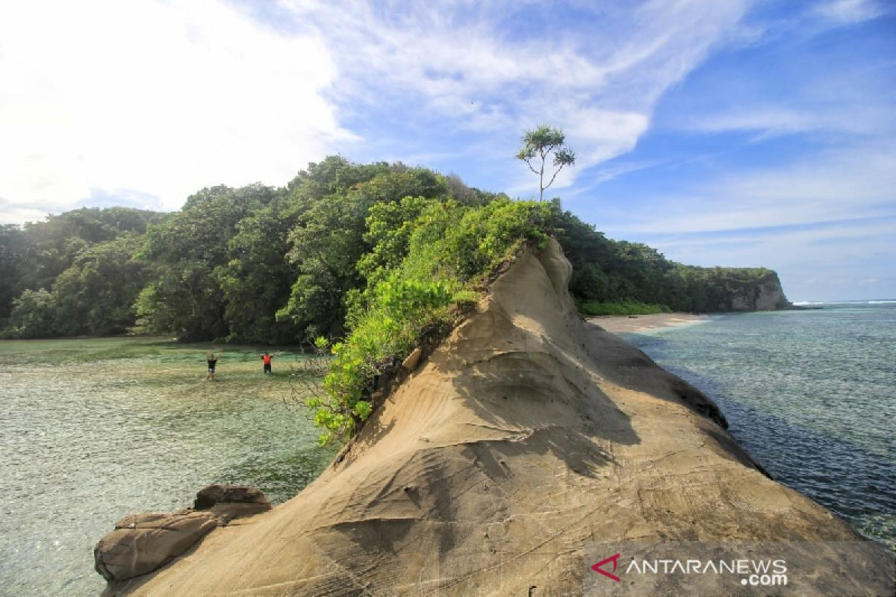
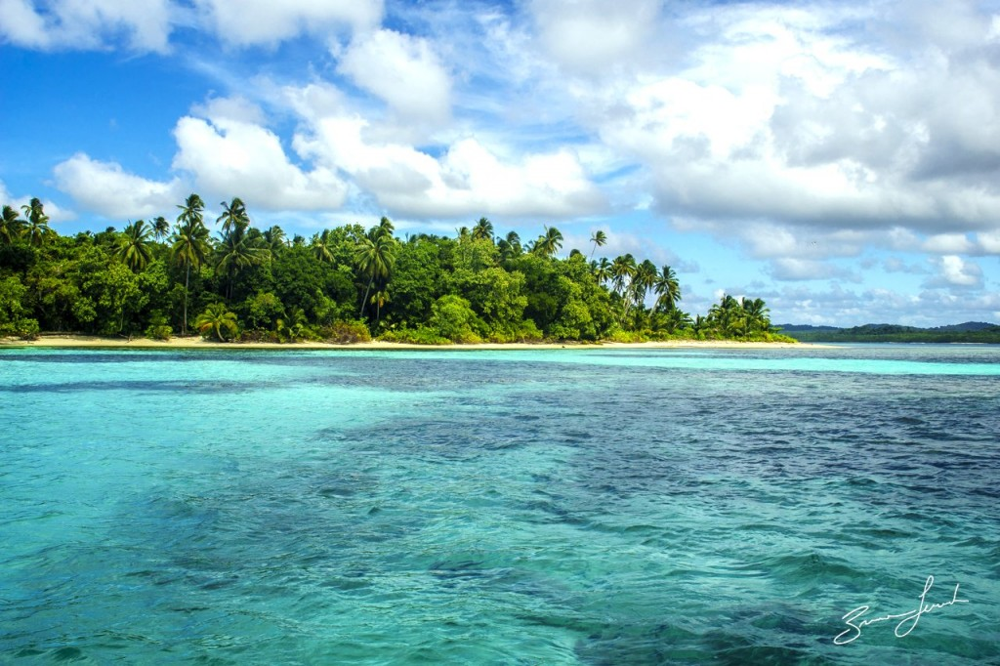

Pulau Enggano adalah pulau kecil di Samudra Hindia yang termasuk wilayah Provinsi Bengkulu. Letaknya yang terpencil membuat alamnya masih terjaga dan suasananya sangat tenang.

Snorkeling, berselancar, menjelajahi pantai, dan mengenal kehidupan masyarakat pulau.
Enggano berada jauh dari daratan Bengkulu sehingga perjalanan memerlukan transportasi laut atau penerbangan perintis. Cek jadwal dan ketersediaan transportasi terbaru sebelum merencanakan perjalanan.
Bawa pulang sampahmu, jangan merusak terumbu karang dan tumbuhan, serta hormati satwa dan masyarakat setempat.